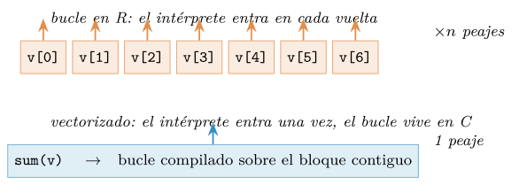
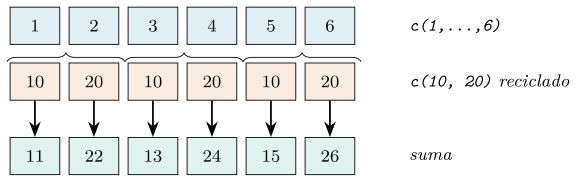
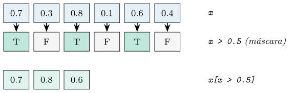
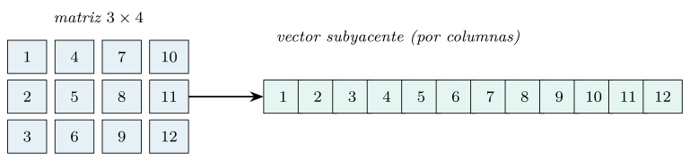
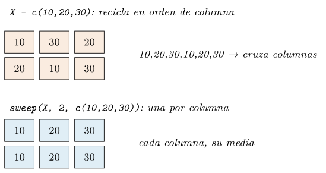
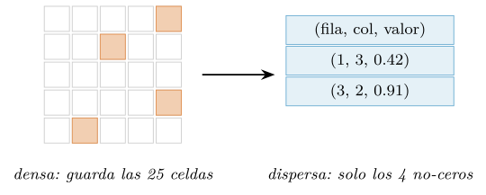
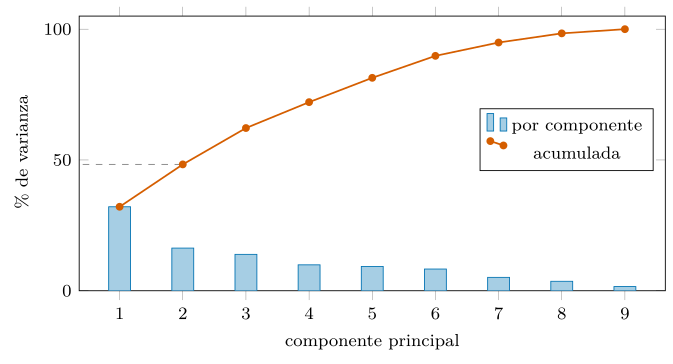

Capítulo 7. Vectorización, matrices y álgebra en R
▶ Ejecutar este capítulo en Binder
La primera vez que se abre, Binder construye el entorno en la nube (unos 10-20 min); verás una pantalla de progreso. Después queda en caché y abre en segundos. Si parece que no responde, espera a que termine de construirse o vuelve a intentarlo.
En muchos lenguajes, calcular sobre miles de números en bloque exige una biblioteca aparte que traiga un tipo de dato nuevo y una manera nueva de escribir. En R no hace falta: el vector es el tipo de dato del lenguaje (cap. 2), y operar sobre él en masa es la forma natural de escribir. Lo que en otros ecosistemas es una capa añadida —un array que se importa y se aprende— en R es el sustrato mismo sobre el que se construyó todo, desde su ascendencia en el lenguaje S de los laboratorios Bell. Este capítulo trata de sacarle partido: entender por qué una operación vectorizada es órdenes de magnitud más rápida que el bucle equivalente, cómo se extiende esa idea a dos dimensiones con las matrices, y cómo R resuelve el álgebra lineal —sistemas, mínimos cuadrados, descomposiciones— apoyándose en las mismas bibliotecas numéricas compiladas que usa el resto del mundo científico.
El recorrido: primero, la vectorización como idioma —la operación que viaja al vector entero, el coste real del bucle interpretado, las máscaras booleanas y el reciclaje que hace las veces de broadcasting—. Después, la matriz como un vector con dos dimensiones —su disposición por columnas, el indexado, la aritmética elemento a elemento frente al producto matricial, y el centrado de columnas con sweep—. Luego, el álgebra lineal aplicada —resolver sistemas sin invertir, los mínimos cuadrados que sostienen la regresión, las descomposiciones—; la aleatoriedad reproducible con set.seed y el generador explícito; las matrices dispersas para cuando casi todo son ceros; y un integrador que trata el catálogo musical como una matriz de rasgos. Como siempre, cada cifra se ha medido ejecutando el código, y los tiempos se dan como cocientes (cap. 1).
La vectorización como idioma
La idea es tan central en R que conviene enunciarla sin rodeos: casi ninguna operación numérica necesita un bucle, porque las funciones y los operadores de R ya actúan sobre el vector entero de una vez. Sumar uno a un millón de números, sacar su raíz, compararlos con un umbral: en cada caso se escribe una sola expresión, sin índice ni iteración a la vista.
x <- c(1, 4, 9, 16, 25)
sqrt(x) # la raiz se aplica a TODO el vector
#> [1] 1 2 3 4 5
x + 1 # + es vectorizado: elemento a elemento
#> [1] 2 5 10 17 26
x > 10 # la comparacion produce una mascara logica
#> [1] FALSE FALSE FALSE TRUE TRUENo hay bucle porque no hace falta escribirlo: está dentro de sqrt, de + y de >, escrito en C y compilado. Esta es la diferencia que lo cambia todo. Cuando escribes el bucle tú, en R, cada vuelta pasa por el intérprete —comprobar tipos, buscar métodos, gestionar la memoria—, y ese peaje se paga un millón de veces. Cuando la operación está vectorizada, el intérprete se invoca una sola vez y el trabajo repetitivo ocurre en código máquina. La factura es medible:
v <- runif(1e6)
system.time({ s <- 0; for (i in seq_along(v)) s <- s + v[i] }) # bucle
system.time(sum(v)) # vectorizado
# el bucle tarda del orden de 30 veces mas [medido]El bucle en R es del orden de veinte a treinta veces más lento que sum para esta tarea. Aquí el cociente es un factor aproximadamente constante por elemento —ambas versiones recorren los \(n\) números una vez, y lo que se paga es el peaje del intérprete en cada vuelta frente a la única entrada del código compilado—; el factor se dispara a órdenes de magnitud solo cuando la versión ingenua es además superlineal, como crecer un vector en un bucle (cap. 4). La lección operativa, que atraviesa todo el capítulo, es una regla de escritura antes que de rendimiento: cuando exista una función o un operador vectorizado que haga el trabajo, úsalo; el bucle explícito es el último recurso, reservado para lo que de verdad no se puede expresar de otra forma (cap. 3). No es solo que sea más rápido: es que se lee mejor, porque dice qué se calcula en lugar de cómo se itera. Hay además una razón histórica en esta preferencia: R desciende del lenguaje S, diseñado en los laboratorios Bell para el análisis estadístico interactivo, donde el objeto de trabajo nunca fue el número suelto sino la variable —una columna entera de observaciones—. Operar sobre variables completas no era una optimización que se añadió después, sino la premisa desde la que se pensó el lenguaje, y por eso la vectorización se siente natural en R y forzada en lenguajes que la incorporaron como biblioteca. Interiorizar esta herencia ayuda a escribir R idiomático: cuando dudes entre un bucle y una operación de conjunto, la operación de conjunto es casi siempre la que el lenguaje espera.

Reciclaje: el broadcasting de R
¿Qué ocurre cuando los dos operandos no tienen la misma longitud? R aplica el reciclaje: repite el vector más corto tantas veces como haga falta para alcanzar al más largo. Es la misma idea que en otros ecosistemas se llama broadcasting, solo que en R es una regla del lenguaje base, no una extensión.
c(1, 2, 3, 4, 5, 6) + c(10, 20) # el corto se recicla: 10 20 10 20 10 20
#> [1] 11 22 13 24 15 26
c(1, 2, 3) * 2 # el escalar es un vector de longitud 1
#> [1] 2 4 6El caso más común —operar un vector con un escalar— es solo el reciclaje llevado al extremo: el «escalar» 2 es en realidad un vector de longitud uno que se recicla hasta igualar al otro. Multiplicar un vector por dos, restarle su media, dividirlo por su desviación: todas son operaciones vector-contra-escalar resueltas por reciclaje, y de ahí que centrar o tipificar datos sea en R una sola línea sin bucle.

c(10, 20) se repite —se «recicla»— para cubrir la longitud del largo antes de operar elemento a elemento. Es el broadcasting de R, y el caso vector-contra- escalar (un vector de longitud uno) no es más que su forma extrema. Cuando la longitud del largo no es múltiplo de la del corto, R hace la operación pero avisa: casi siempre es un error de forma.El reciclaje tiene un guardia de seguridad parcial: cuando la longitud del largo no es múltiplo de la del corto, R hace la operación pero avisa, porque esa combinación casi siempre delata un error de forma.
c(1, 2, 3) + c(1, 2)
#> Warning: longitud de objeto mayor no es múltiplo
#> de la longitud de uno menorEse aviso conviene tratarlo como un error: si las longitudes no encajan limpiamente, es que algo no cuadra en el cálculo, y seguir adelante produce resultados silenciosamente equivocados. La disciplina de formas —saber en todo momento qué longitud tiene cada vector— es al cómputo vectorizado lo que la disciplina de tipos era al modelo de datos (cap. 2). En la práctica, la mejor defensa contra los errores de reciclaje es la deliberación: reciclar a propósito —un vector contra un escalar, o contra otro de longitud submúltiplo conocida— es idiomático y limpio; reciclar por accidente —porque dos vectores que debían tener la misma longitud no la tienen— es un bug. La diferencia está en la intención, y el aviso de R es la señal de que quizá la intención y el código no coinciden.
Máscaras booleanas: seleccionar sin bucle
Una comparación vectorizada produce un vector lógico —una máscara— y ese vector es una herramienta de selección de primer orden. Con él se cuenta, se localiza, se filtra y se asigna, todo sin iterar (cap. 2).
energia <- runif(20) # (semilla 2026)
sum(energia > 0.5) # cuantas superan el umbral: TRUE cuenta 1
#> [1] 8
which(energia > 0.5) # en que posiciones
#> [1] 1 2 5 8 10 ...
mean(energia[energia > 0.5]) # media SOLO de las que pasan la mascara
#> [1] 0.667
energia[energia < 0.2] <- 0 # mascara: pone a 0 las bajasCuatro operaciones distintas —contar, localizar, resumir un subconjunto, modificar selectivamente— y ninguna necesita un bucle: la máscara las expresa todas. sum sobre un lógico cuenta los TRUE (que valen uno); which traduce la máscara a posiciones; indexar con la máscara extrae el subconjunto; y asignar a una porción enmascarada modifica solo esos elementos. Este vocabulario —máscara, sum, which, indexado, asignación indexada— resuelve la inmensa mayoría de los «para cada elemento, si cumple tal condición, haz tal cosa» que en otros lenguajes pedirían un bucle con un if dentro. La clave conceptual es que la máscara es un dato: un vector lógico que se puede guardar, combinar con & y |, negar con !, y reutilizar. Combinar dos condiciones —pistas enérgicas y bailables— es (energia > 0.7) & (baile > 0.6), una máscara nueva a partir de dos, y toda la lógica de selección se vuelve álgebra de vectores lógicos. Esa reificación de la condición —tratarla como un objeto y no como una rama de control— es una de las diferencias mentales más profundas entre programar en R y en un lenguaje imperativo, y dominarla es lo que hace que el código de selección en R sea tan corto.

x > 0.5) produce un vector lógico; usarlo como índice extrae los elementos donde vale TRUE. La misma máscara sirve para contar (sum), localizar (which), resumir un subconjunto (mean(x[máscara])) o modificar selectivamente (x[máscara] <- 0) —todo sin un solo bucle—.Para las condiciones que eligen entre dos valores está ifelse vectorizado, y para los recortes a un rango, la pareja pmin/pmax, que operan elemento a elemento entre vectores:
x <- c(-3, 5, -1, 8, 0)
ifelse(x < 0, 0, x) # rectifica: los negativos a 0
#> [1] 0 5 0 8 0
pmax(x, 0) # lo mismo, mas idiomatico
#> [1] 0 5 0 8 0
pmin(pmax(x, 0), 5) # recorta al rango [0, 5]
#> [1] 0 5 0 5 0pmax(x, 0) —el máximo elemento a elemento entre cada valor y cero— es la rectificación que reaparece en las redes neuronales (cap. 13), y pmin(pmax(x, lo), hi) es el recorte a un intervalo que la limpieza de datos usa a diario (cap. 10). Ambas son vectorizadas, sin bucle, y se leen como lo que hacen.
outer: multiplicar todas las formas
Cuando la operación no es entre vectores alineados sino entre todas las combinaciones de dos vectores, la herramienta es outer, el producto externo: aplica una función a cada par (elemento de \(a\), elemento de \(b\)) y devuelve una matriz con el resultado.
outer(1:3, 1:4) # la tabla de multiplicar 3x4
#> [,1] [,2] [,3] [,4]
#> [1,] 1 2 3 4
#> [2,] 2 4 6 8
#> [3,] 3 6 9 12
outer(1:3, 1:3, FUN = "+") # o con cualquier funcion binaria
outer(c("pop","rock"), c("A","B"), paste, sep = "-") # tambien con textoouter es broadcasting explícito: donde el reciclaje alinea dos vectores de la misma longitud, outer los cruza en una rejilla completa. Aparece cada vez que hace falta una tabla de distancias entre puntos, una matriz de similitudes entre categorías o cualquier cálculo «todos contra todos», y evita el doble bucle anidado que sería su alternativa ingenua. El paso mental que cuesta al principio —y que merece la pena hacer conscientemente— es dejar de pensar «para cada \(i\), para cada \(j\), calcula» y empezar a pensar «la tabla de todos los pares es una matriz, y outer la construye»: el mismo giro de elemento a colección que gobierna todo el capítulo, ahora en dos dimensiones.
Precisión: otra razón para no escribir el bucle
Vectorizar no es solo más rápido: a menudo es más exacto. La aritmética de punto flotante (cap. 2) acumula error de redondeo, y en una suma de muchos números ese error depende del orden en que se suman —un número grande puede «tragarse» a uno pequeño—. Las funciones de agregación de R están escritas con cuidado para minimizarlo: sum y mean usan por dentro un acumulador de precisión extendida, más ancho que un doble normal, de modo que su resultado es más fiable que el del bucle ingenuo equivalente.
v <- rep(0.1, 10)
sum(v) == 1 # TRUE: sum acumula en precision extendida
#> [1] TRUE
s <- 0; for (x in v) s <- s + x # el mismo calculo, a mano
s == 1
#> [1] FALSE <- 0.9999999999999999: el error se acumuloSumar diez veces 0.1 debería dar exactamente uno, y sum lo consigue mientras que el bucle acumula un error de redondeo que lo deja en 0.999…. No es que el bucle esté «mal»: es que reimplementa a mano, sin las precauciones numéricas, algo que R ya hace con cuidado. Esto refuerza la regla del capítulo desde otro ángulo: la función vectorizada no solo te ahorra escribir el bucle y te da velocidad, sino que incorpora décadas de saber numérico que tu bucle improvisado no tiene. Y da una regla complementaria, heredada del capítulo 2: para comparar resultados de punto flotante —dos vectores, dos matrices— nunca uses ==, que exige igualdad exacta al último bit, sino isTRUE(all.equal(a, b)), que admite la tolerancia numérica inevitable. identical y == son para enteros y para valores que deben ser idénticos bit a bit; all.equal, para el mundo continuo donde el redondeo manda.
Tablas todos-contra-todos: outer y dist
El producto externo de §7.1.3 tiene un uso recurrente que merece nombre propio: construir la tabla de alguna relación entre todos los pares de un conjunto. La tabla de distancias entre puntos, por ejemplo, con outer y una función de dos argumentos:
pts <- c(0, 3, 5, 9)
outer(pts, pts, function(a, b) abs(a - b)) # distancia entre cada par
#> [,1] [,2] [,3] [,4]
#> [1,] 0 3 5 9
#> [2,] 3 0 2 6 <- simetrica, diagonal cero
#> [3,] 5 2 0 4
#> [4,] 9 6 4 0Para el caso concreto de las distancias euclídeas entre las filas de una matriz —los puntos como vectores de varias coordenadas—, R trae dist, que las calcula todas de una vez y en C:
P <- matrix(runif(8), 4, 2) # 4 puntos en 2 dimensiones
as.matrix(dist(P)) # matriz 4x4 de distancias entre los puntosEstas tablas todos-contra-todos son el punto de partida de muchos métodos: el agrupamiento por vecindad, los sistemas de recomendación —la similitud coseno del integrador (§7.8) es una de ellas—, la detección de duplicados aproximados. Su coste es cuadrático en el número de puntos —una tabla \(n\times n\)—, así que para conjuntos grandes hay que ser consciente de que dist de un millón de puntos pediría un billón de celdas; ahí entran las estructuras de vecindad aproximada, pero para los tamaños moderados del análisis exploratorio, outer y dist resuelven el problema en una línea.
El repertorio vectorizado
Antes de subir a dos dimensiones conviene tener a mano el catálogo de funciones que ya vienen vectorizadas, porque conocerlo es la diferencia entre escribir un bucle y recordar que no hace falta. Las hay de acumulación —cumsum, cumprod, cummax, cummin, que recorren el vector arrastrando un acumulado (cap. 4)—, de diferencias —diff, que resta cada elemento del anterior—, y de conteo —tabulate, que cuenta apariciones de enteros a velocidad de C—:
x <- c(3, 1, 4, 1, 5, 9)
cumsum(x) # sumas parciales: 3, 3+1, 3+1+4, ...
#> [1] 3 4 8 9 14 23
diff(x) # x[i] - x[i-1]: las variaciones consecutivas
#> [1] -2 3 -3 4 4
cummax(x) # el maximo visto hasta cada posicion
#> [1] 3 3 4 4 5 9
tabulate(sample(1:5, 1e6, TRUE), 5) # conteo de un millon en ~0.001 s
#> [1] 200110 199300 200268 200506 199816diff es la herramienta de las series —variaciones día a día, velocidades a partir de posiciones— y cumsum responde en tiempo constante cualquier suma de un tramo (cap. 4); tabulate, con su millón de conteos en un milisegundo, es la vectorización del histograma. Ninguna necesita un bucle, y usarlas no es solo más rápido: es declarar la intención —«acumula», «diferencia», «cuenta»— en una palabra. El resto de este capítulo se apoya en que este repertorio está interiorizado; cuando surja la tentación de escribir for, la primera pregunta es siempre si ya existe la función que lo hace por dentro. Y la respuesta, sorprendentemente a menudo, es que sí: R lleva décadas acumulando funciones para las operaciones comunes, y buena parte del arte de escribir R idiomático consiste en conocer ese vocabulario lo bastante como para reconocer, en un problema nuevo, la función que ya lo resuelve. No es memorización ociosa: cada función que conoces es un bucle que no escribes, un error de índice que no cometes y un cálculo que corre en C.
Sobre este repertorio se construyen dos idiomas que aparecen sin cesar en el análisis de series. Las tasas de cambio son diff sobre el acumulado o sobre la serie: el cambio absoluto día a día es diff(x), y el relativo, diff(x) / x[-length(x)]. Y las ventanas deslizantes —la media móvil, esa suavización que sigue una tendencia— tienen en R tres formas vectorizadas, todas sin bucle:
x <- c(10, 12, 9, 14, 11, 13, 8)
rowMeans(embed(x, 3)) # embed apila las ventanas como filas
#> [1] 10.33 11.67 11.33 12.67 10.67
stats::filter(x, rep(1/3, 3)) # como convolucion (deja NA en los bordes)
# y en O(n) con acumulados: (cumsum[i+k] - cumsum[i]) / kembed construye una matriz donde cada fila es una ventana consecutiva, de modo que la media móvil es un rowMeans; filter la calcula como una convolución; y la vía de los acumulados —restar dos posiciones de cumsum (cap. 4)— la resuelve en tiempo lineal para cualquier ancho. Las tres coinciden, y elegir entre ellas es cuestión de claridad y de si importan los bordes. El capítulo 8 dará a estas ventanas la sintaxis de slider sobre tablas, pero la maquinaria vectorizada es esta.
La matriz: un vector con dos dimensiones
Una matriz en R no es un tipo nuevo: es un vector atómico corriente (cap. 2) al que se le ha pegado un atributo dim con dos números. Esa es toda la diferencia entre un vector de doce elementos y una matriz de tres por cuatro —el atributo que dice cómo interpretar la secuencia—, y explica por qué la matriz hereda gratis toda la maquinaria vectorizada de la sección anterior.
m <- matrix(1:12, nrow = 3)
m
#> [,1] [,2] [,3] [,4]
#> [1,] 1 4 7 10
#> [2,] 2 5 8 11
#> [3,] 3 6 9 12
as.vector(m) # el vector que hay debajo, sin el dim
#> [1] 1 2 3 4 5 6 7 8 9 10 11 12Hay un detalle en esos números que decide muchas cosas: la matriz se llenó por columnas. El 1, 2, 3 bajó por la primera columna antes de saltar a la segunda con el 4. R es un lenguaje column-major: en memoria, una matriz es sus columnas puestas una tras otra. Esto es herencia de Fortran y del álgebra numérica, y tiene una consecuencia práctica de rendimiento —recorrer una matriz por columnas respeta el orden de memoria y es más rápido que recorrerla por filas (cap. 4)— y otra de sintaxis: el reciclaje, que actúa en el orden del vector subyacente, alinea de forma natural con las columnas. Si prefieres llenar por filas, hay que pedirlo con byrow = TRUE, pero conviene saber que va contra el grano de la memoria.

dim. En memoria, sus celdas se guardan por columnas: primero la columna 1 entera (1, 2, 3), luego la 2 (4, 5, 6), y así. Recorrerla por columnas respeta ese orden y es más rápido (cap. 4); recorrerla por filas salta por la memoria. El reciclaje, que actúa en el orden del vector, se alinea de forma natural con las columnas.El indexado añade la segunda dimensión con una coma: m[fila, columna]. Omitir un índice toma la dimensión entera, y aquí aparece una sutileza que hay que tener presente —la misma drop del capítulo 2—:
m[2, 3] # un elemento
#> [1] 8
m[, 2] # toda la columna 2: se COLAPSA a vector
#> [1] 4 5 6
m[, 2, drop = FALSE] # matriz de una columna (conserva la forma)
m[m > 6] # una mascara aplana: devuelve un vector con los que pasan
#> [1] 7 8 9 10 11 12Que m[, 2] devuelva un vector y no una matriz de una columna es el comportamiento por defecto (drop = TRUE), cómodo casi siempre y traicionero en funciones genéricas que esperan siempre una matriz; drop = FALSE lo desactiva. Y una máscara lógica sobre una matriz la trata como el vector que es, devolviendo los elementos que pasan en un vector plano.
Elemento a elemento frente al producto matricial
Aquí vive el error conceptual más común de quien llega al álgebra en R. El operador * entre dos matrices no es el producto matricial: es la multiplicación elemento a elemento, la misma vectorización de siempre extendida a dos dimensiones. El producto matricial —filas por columnas— tiene su propio operador, %*%.
a <- matrix(1:4, 2); b <- matrix(c(1, 0, 0, 1), 2) # b es la identidad
a * b # elemento a elemento: cada celda por su pareja
#> [,1] [,2]
#> [1,] 1 0
#> [2,] 0 4
a %*% b # producto matricial: por la identidad, da a
#> [,1] [,2]
#> [1,] 1 3
#> [2,] 2 4Confundirlos produce resultados que a veces tienen la forma correcta pero los números equivocados —el caso más difícil de depurar—, así que conviene fijarlo: * es aritmética vectorizada, %*% es álgebra. La distinción se paga cara cuando se confunde en silencio: dos matrices cuadradas del mismo tamaño admiten tanto * como %*%, y ambas devuelven una matriz de la misma forma, de modo que un error de operador no cambia las dimensiones del resultado —solo sus números—, y puede propagarse capítulos abajo hasta manifestarse como un modelo que no ajusta o una figura que no tiene sentido. Es el tipo de error que ninguna comprobación de formas detecta, y por eso conviene grabar la regla a fuego antes de escribir la primera regresión. La familia del producto matricial la completan t() (traspuesta), diag() (extrae o construye diagonales, y diag(n) es la identidad de orden \(n\)) y las variantes optimizadas que veremos en la sección de álgebra.
Remodelar: cambiar la forma sin copiar los datos
Como una matriz es un vector con un dim, cambiarle la forma es cambiarle el atributo, no mover los datos. Asignar a dim(v) convierte un vector en matriz al vuelo; matrix hace lo mismo con más control; y para pegar matrices están cbind (por columnas), rbind (por filas) y t (traspuesta):
v <- 1:12
dim(v) <- c(3, 4) # el mismo vector, ahora visto como matriz 3x4
cbind(matrix(1:6, 2), c(7, 8)) # anadir una columna
rbind(matrix(1:6, 2), c(9, 10, 11)) # anadir una fila
t(matrix(1:6, 2)) # traspuesta: 2x3 -> 3x2Estas operaciones son el equivalente del reshape de otros lenguajes, con la misma advertencia sobre el orden: como R llena por columnas (§7.2), remodelar reinterpreta el vector subyacente en ese orden. cbind y rbind son, además, la vía habitual de construir una matriz de diseño —pegar una columna de unos y los predictores (§7.4.2)— y de ir ensamblando resultados; su coste, como el de crecer cualquier estructura (cap. 4), es lineal por llamada, así que para muchos pegados conviene acumular en una lista y hacer un do.call(rbind, ...) final.
Broadcasting de columnas: sweep y scale
La operación más frecuente sobre una matriz de datos —una fila por observación, una columna por variable— es aplicarle algo por columnas: restar la media de cada columna para centrar, dividir por la desviación para tipificar. Es broadcasting de un vector (uno por columna) contra una matriz, y R lo expresa con sweep, que «barre» un vector a lo largo de una dimensión:
X <- matrix(c(1, 2, 3, 4, 5, 6), nrow = 3) # 3 filas, 2 columnas
medias <- colMeans(X) # una media por columna
sweep(X, 2, medias) # resta 'medias' por columnas (dim 2)
#> [,1] [,2]
#> [1,] -1 -1
#> [2,] 0 0
#> [3,] 1 1
colMeans(sweep(X, 2, medias)) # cada columna queda centrada en 0
#> [1] 0 0El 2 de sweep(X, 2, medias) es la dimensión sobre la que se barre: 2 son las columnas, 1 serían las filas. Y como centrar y tipificar a la vez es tan común, R lo trae hecho en scale, que además guarda los parámetros usados como atributos —justo lo que un transformador (cap. 6) necesita para aplicar a datos nuevos la misma escala del entrenamiento—:
Z <- scale(X) # centra y divide por la desviacion, por columna
colMeans(Z); apply(Z, 2, sd) # media 0, desviacion 1 en cada columna
#> [1] 0 0
#> [1] 1 1
attr(Z, "scaled:center") # las medias que se restaron: reutilizables
#> [1] 2 5La trampa del reciclaje por columnas
Hay un error de broadcasting que muerde a casi todo el que centra datos por primera vez, y conviene verlo para no cometerlo. Restar un vector a una matriz con el operador - parece que va a restar ese vector a cada fila —lo que querríamos para centrar por columnas—, pero el reciclaje de R actúa en el orden del vector subyacente, que es por columnas (§7.2). El resultado es un desajuste silencioso:
X <- matrix(1:6, nrow = 2, byrow = TRUE) # 2 filas, 3 columnas
medias_col <- c(10, 20, 30) # una media por columna
X - medias_col # el reciclaje va por COLUMNAS: desalineado
#> [,1] [,2] [,3]
#> [1,] -9 -28 -17 <- resta 10 y 20 dentro de la 1a columna: MAL
#> [2,] -16 -5 -24
sweep(X, 2, medias_col) # sweep respeta la dimension: CORRECTO
#> [,1] [,2] [,3]
#> [1,] -9 -18 -27 <- cada columna menos su media
#> [2,] -6 -15 -24El primer resultado tiene la forma correcta pero los números equivocados —el caso más difícil de detectar—, porque el vector de tres medias se recicló a lo largo de las seis celdas en orden de columna, cruzando las columnas. sweep evita la trampa precisamente porque le decimos la dimensión (2) sobre la que alinear. La regla que ahorra horas de depuración: para operar una matriz con un vector por columnas o por filas, usa siempre sweep (o scale para el caso de centrar/tipificar), nunca el - o el * directos, que reciclan en orden de memoria y solo aciertan por casualidad cuando el vector tiene tantos elementos como filas.

X - v recicla el vector en el orden de la memoria (por columnas), cruzando las columnas y produciendo un centrado equivocado con forma correcta. Abajo, sweep(X, 2, v) alinea el vector con la dimensión indicada —una media por columna— y centra bien. Para operar una matriz con un vector por filas o columnas, siempre sweep o scale.Resúmenes por fila y por columna
Para agregar a lo largo de una dimensión, R ofrece dos caminos, y la diferencia de rendimiento entre ellos es una lección más de vectorización. El camino general es apply(M, dim, f), que aplica cualquier función a cada fila (dim = 1) o columna (dim = 2). El camino rápido son las funciones dedicadas —rowSums, colSums, rowMeans, colMeans—, escritas en C y vectorizadas de verdad.
M <- matrix(runif(3e6), ncol = 3) # un millon de filas
system.time(apply(M, 1, sum)) # generico: itera por filas en R
system.time(rowSums(M)) # dedicado: en C, vectorizado
# rowSums es del orden de 130 veces mas rapido [medido]apply es cómodo y general —acepta cualquier función—, pero por dentro itera en R, con el peaje del intérprete que ya conocemos; para las agregaciones comunes es del orden de cien veces más lento que la función dedicada. La regla se repite: cuando exista la versión vectorizada específica (rowSums y compañía, o el paquete matrixStats para medianas, desviaciones y cuantiles por fila o columna), úsala; apply es para las funciones que no tienen una versión dedicada. Y con apply conviene recordar una sorpresa: cuando la función que aplicas devuelve un vector (no un escalar), apply apila los resultados por columnas, de modo que apply(M, 1, f) —«por filas»— devuelve el resultado traspuesto respecto a lo que la intuición sugiere. Es una fuente clásica de matrices que salen giradas; ante un resultado con las dimensiones cambiadas, el culpable suele ser esta transposición implícita, y la cura es un t() o replantear el cálculo con las funciones dedicadas. Y una nota de memoria que enlaza con el capítulo 4: una matriz de enteros ocupa la mitad que una de dobles (cuatro bytes por celda frente a ocho), de modo que una matriz \(1000\times1000\) de enteros pesa 4 MB y la de dobles 8 MB. Cuando el contenido son de verdad enteros —índices, conteos, categorías codificadas— declararlos como tales (1L, no 1.0) ahorra la mitad del espacio; cuando son medidas continuas, dobles y no darle más vueltas. Es una decisión que rara vez importa en tablas pequeñas y que se vuelve crítica en las grandes: una matriz de diez millones de enteros pesa 40 MB como integer y 80 MB como double, y esa diferencia puede ser la que decide si un cálculo cabe en memoria o no (cap. 5).
Vistas y copias: R siempre copia
Quien llega desde otros ecosistemas de arrays trae una preocupación aprendida: distinguir cuándo una rebanada es una vista —una ventana sobre la memoria original, que si se modifica altera el array padre— y cuándo es una copia independiente. En otros ecosistemas de arrays esa distinción es constante fuente de errores sutiles. En R el problema, sencillamente, no existe: R no tiene vistas. Toda rebanada, toda asignación, produce conceptualmente una copia, y el modelo de copia perezosa del capítulo 2 —copy-on-modify— hace que esa copia solo se materialice cuando de verdad se modifica algo.
v <- 1:10
sub <- v[2:4] # una porcion
sub[1] <- 0 # modificar la porcion...
v[2] # ...no toca el original
#> [1] 2 <- v intacto: sub era una copia, no una vistaEsta es una de las grandes simplificaciones del modelo de R, y conviene apreciarla: la garantía del capítulo 2 —«una función no puede estropear tus datos»— se extiende a las rebanadas de matrices y vectores. Nunca hay que preguntarse «¿esto es una vista?», porque la respuesta es siempre no. El precio, ya discutido, es que modificar un elemento de un objeto grande con otra referencia viva paga la copia entera (cap. 4); la ventaja es que el código es más fácil de razonar, porque ninguna modificación tiene efectos a distancia. Es un canje deliberado —seguridad por un coste de copia acotado— y, para el análisis de datos, casi siempre el correcto.
Más allá de dos dimensiones: el array
La matriz es un vector con dos dimensiones; nada impide tener más. El array de R es un vector con un dim de la longitud que se quiera, y es el equivalente directo del ndarray de otros lenguajes: un cubo de datos, o un hipercubo. La generalización es limpia porque no hay nada nuevo que aprender: las mismas reglas —indexar con comas, agregar sobre márgenes, el orden por columnas— suben de una a dos y a \(n\) dimensiones sin cambiar de naturaleza. Aparecen de forma natural cuando una tabla gana un tercer eje —pistas por rasgos por semana, píxeles por canal de color, sensores por variable por instante—.
A <- array(1:24, dim = c(2, 3, 4)) # 2 x 3 x 4: cuatro matrices 2x3 apiladas
dim(A); length(A)
#> [1] 2 3 4
#> [1] 24
A[, , 1] # la primera "loncha": una matriz 2x3
A[2, 3, 4] # un elemento, con tres indices
#> [1] 24El indexado añade tantas comas como dimensiones, y la agregación se generaliza con apply sobre los márgenes: la lista de dimensiones que se conservan. Promediar a lo largo del tercer eje —colapsar las cuatro lonchas en su media, celda a celda— es apply(A, c(1, 2), mean); sumar cada loncha entera es apply(A, 3, sum):
apply(A, c(1, 2), mean) # conserva filas y columnas: media sobre la 3a dim
#> [,1] [,2] [,3]
#> [1,] 10 12 14
#> [2,] 11 13 15
apply(A, 3, sum) # conserva la 3a dim: un total por loncha
#> [1] 21 57 93 129El argumento de márgenes de apply es el equivalente del parámetro axis de otros lenguajes, con una diferencia de perspectiva que conviene fijar: en R se declara la dimensión que se mantiene, no sobre la que se agrega. apply(A, 3, sum) conserva la tercera dimensión y suma todo lo demás. Para reordenar los ejes —la transposición generalizada a \(n\) dimensiones— está aperm, y con dimnames el array gana etiquetas por eje, de modo que un cubo pistas\(\times\)rasgos\(\times\)semana se indexa por nombre:
cubo <- array(datos, dim = c(5, 3, 4),
dimnames = list(pistas, c("energy","valence","tempo"), semanas))
apply(cubo[, "energy", ], 1, mean) # energia media por pistaLos arrays de más de dos dimensiones son menos frecuentes en el análisis tabular —donde el data frame (cap. 8) suele ser la estructura adecuada—, pero son la representación natural de los datos con estructura de rejilla —imágenes, series multivariantes, tensores del aprendizaje profundo (cap. 13)—, y conviene saber que R los trata con la misma economía que a las matrices: un vector con un dim, y apply sobre sus márgenes. La uniformidad es la moraleja: no hay tres tipos distintos —vector, matriz, array— sino uno solo, el vector atómico, visto a través de atributos que le dan una, dos o más dimensiones. Esa economía conceptual —una estructura, muchas formas— es la que hace que lo aprendido para vectores valga para matrices y para cubos sin excepción, y es coherente con la lección del capítulo 4: en R, casi todo es, por debajo, un vector con etiquetas.
Álgebra lineal aplicada
El álgebra lineal es el motor silencioso de la ciencia de datos: la regresión, la reducción de dimensión, casi todo el aprendizaje automático se reducen, por debajo, a operaciones con matrices. R no las implementa él mismo —sería lento y propenso a errores numéricos—, sino que delega en LAPACK y BLAS, las mismas bibliotecas compiladas en Fortran, pulidas durante décadas, que usa el resto del mundo científico. Cuando escribes A %*% B o solve(A, b), el trabajo pesado ocurre en código numérico de primera calidad; tu papel es llamarlo bien. Conviene además una imagen mental que da sentido a todo lo que sigue: una matriz no es solo una tabla de números, es una transformación —una función lineal que toma un vector y lo lleva a otro, rotándolo, estirándolo o proyectándolo—. Multiplicar por una matriz es aplicar esa transformación; resolver un sistema es deshacerla; las descomposiciones la revelan en piezas simples (una rotación, un estiramiento, otra rotación). Esta lectura geométrica, que el apéndice de álgebra desarrolla, es la que convierte las fórmulas en intuición: el análisis de componentes principales del integrador, por ejemplo, no es más que encontrar las direcciones en las que la nube de datos se estira, y eso es lo que eigen calcula.
El producto matricial tiene, además del %*% general, variantes especializadas que reconocen patrones frecuentes y ahorran trabajo. La más útil es crossprod(A), que calcula \(A^{\top}A\) —el producto de una matriz por su traspuesta, omnipresente en estadística— sin construir la traspuesta explícitamente:
A <- matrix(rnorm(2000 * 400), 2000, 400)
system.time(t(A) %*% A) # traspone y multiplica
system.time(crossprod(A)) # lo mismo, sin materializar t(A)
# crossprod es ~1.4x mas rapida aqui, y evita una copia de A [medido]La ganancia —del orden de 1,4 veces en esta matriz, más en las grandes— viene de no materializar la traspuesta y de que LAPACK explota la simetría del resultado. Su pareja tcrossprod(A) calcula \(AA^{\top}\). Son el tipo de detalle que distingue el código numérico competente: usar la función que conoce la estructura del problema. La familia es más amplia de lo que parece —crossprod, tcrossprod, solve, backsolve, chol2inv y otras reconocen cada una un patrón frecuente y lo explotan—, y aunque no hace falta memorizarlas, sí conviene tener el reflejo de preguntarse, ante una expresión de álgebra, si existe la función especializada que la calcula mejor. La diferencia con escribir la fórmula literal rara vez es enorme en una operación suelta, pero se acumula cuando esa operación está dentro de un bucle de ajuste que se ejecuta miles de veces.
Junto al producto, R trae los escalares que resumen una matriz, cada uno una llamada: sum(diag(M)) para la traza, det(M) para el determinante, norm(M, "F") para la norma de Frobenius (y "2" para la norma espectral), y qr(M)$rank para el rango. Son las medidas que diagnostican una matriz antes de operarla —un determinante nulo delata una matriz singular, un rango deficiente una columna redundante—, y conviene tenerlas a mano porque una comprobación barata evita un cálculo que fallaría después.
Resolver sistemas: por qué nunca se invierte
Dado un sistema \(A\mathbf{x} = \mathbf{b}\), la tentación del que viene del álgebra de pizarra es escribir \(\mathbf{x} = A^{-1}\mathbf{b}\): invertir \(A\) y multiplicar. En R eso sería solve(A) %*% b, y es un error de método. La forma correcta es pasar los dos argumentos a solve, que resuelve el sistema directamente sin calcular la inversa:
x1 <- solve(A, b) # resuelve Ax = b (correcto)
x2 <- solve(A) %*% b # invierte y multiplica (mal metodo)Ambos dan el mismo resultado en este ejemplo de juguete, pero solve(A, b) es más rápido —hace la mitad del trabajo— y, sobre todo, numéricamente más estable: calcular la inversa completa acumula más error de redondeo (cap. 2) que resolver el sistema por eliminación. La regla numérica, válida en cualquier lenguaje, es tajante: si solo necesitas resolver un sistema, nunca inviertas la matriz. La inversa explícita se reserva para los raros casos en que la propia inversa es el objeto de interés, no un paso intermedio. Esta preferencia por resolver en lugar de invertir es un ejemplo de una actitud más amplia del cálculo numérico: no calcular más de lo que la pregunta pide. Invertir una matriz responde a «¿cuál es la inversa?»; pero la pregunta real era «¿cuál es la \(\mathbf{x}\) que cumple \(A\mathbf{x} = \mathbf{b}\)?», y esa se contesta con menos trabajo y más precisión sin pasar por la inversa. Cada vez que un cálculo numérico parece pedir un objeto intermedio grande —una inversa, una matriz densa, una copia—, vale la pena preguntarse si la respuesta final lo necesita de verdad o si hay un camino directo.
Mínimos cuadrados: el corazón de la regresión
El ajuste por mínimos cuadrados —encontrar el \(\boldsymbol{\beta}\) que mejor explica \(\mathbf{y}\) como combinación lineal de las columnas de \(X\)— es el problema de álgebra lineal más frecuente en análisis de datos, y el que sostiene la regresión del capítulo 11. Geométricamente, resolver mínimos cuadrados es proyectar el vector de respuestas sobre el subespacio que generan los predictores: buscar, dentro de todas las combinaciones lineales posibles de las columnas de \(X\), la que más se acerca a \(\mathbf{y}\). El residuo —lo que queda sin explicar— es perpendicular a ese subespacio, y esa perpendicularidad es justo lo que la ecuación normal expresa. Ver la regresión como una proyección, y no como una fórmula, es lo que la conecta con el resto del álgebra de este capítulo. La solución de libro es la ecuación normal \(\boldsymbol{\beta} = (X^{\top}X)^{-1}X^{\top}\mathbf{y}\), que en R se escribe casi literal —usando crossprod y solve con dos argumentos, no la inversa—:
X <- cbind(1, rnorm(100), rnorm(100)) # columna de unos + dos predictores
y <- X %*% c(2, -1, 0.5) + rnorm(100, 0, 0.1)
beta <- solve(crossprod(X), crossprod(X, y)) # (X'X)^-1 X'y, bien resuelto
round(beta, 3)
#> [1] 2.010 -1.000 0.505 <- recupera los coeficientes verdaderosFunciona, y enseña de dónde salen los coeficientes de una regresión. Pero en la práctica no se resuelve así: la ecuación normal eleva al cuadrado el condicionamiento del problema y puede perder precisión cuando las columnas de \(X\) están correlacionadas. Los métodos serios —los que usa lm por dentro— factorizan \(X\) con una descomposición QR, más estable:
qr.solve(X, y) # via QR: la ruta estable
lm.fit(X, y)$coefficients # lo que hace lm por dentro
#> los tres coinciden en este caso bien condicionadoLos tres caminos coinciden aquí porque el problema está bien condicionado; la diferencia aflora con datos casi colineales, donde la ecuación normal se degrada y la QR aguanta. La lección es doble: entender la ecuación normal para saber qué calcula una regresión, y usar lm (o qr.solve) para calcularla de verdad, porque incorpora la estabilidad numérica que la fórmula ingenua no tiene.
Descomposiciones: la caja de herramientas
Las descomposiciones factorizan una matriz en un producto de matrices con estructura, y son la navaja suiza del álgebra numérica. R las trae todas de serie, apoyadas en LAPACK:
set.seed(2026)
S <- crossprod(matrix(rnorm(20), 5, 4)) # una matriz simetrica 4x4
eigen(S, symmetric = TRUE)$values # autovalores: la base del PCA
#> [1] 13.472 5.853 0.862 0.522
svd(S)$d # valores singulares
#> [1] 13.472 5.853 0.862 0.522
det(S) # determinante
#> [1] 35.4601Cada una tiene su dominio: eigen (autovalores y autovectores) es la base del análisis de componentes principales que veremos en el integrador y del capítulo 11; svd (descomposición en valores singulares) generaliza la anterior a matrices no cuadradas y sostiene la reducción de dimensión y los sistemas de recomendación; chol (factorización de Cholesky) resuelve sistemas con matrices definidas positivas al doble de velocidad; qr sostiene los mínimos cuadrados. No hay que memorizarlas: basta saber que existen y que, cuando un método estadístico las necesita por debajo, R las tiene y las delega a código numérico de primera. La matemática de cada una vive en el apéndice de álgebra; aquí importa el idioma: en R, factorizar una matriz es una llamada a una función con nombre propio. Y esa es, en el fondo, la promesa del capítulo entero: que la sofisticación numérica —siglos de matemáticas y décadas de ingeniería de software condensados en LAPACK— está a una llamada de distancia, sin que haya que reimplementar nada. El analista competente no es el que sabe programar una descomposición QR, sino el que sabe cuándo la necesita, cómo se llama en R y cómo leer lo que devuelve. La biblioteca hace el cálculo; el criterio lo pones tú.
La matriz como transformación
Vale la pena hacer tangible la idea geométrica con un ejemplo, porque ilumina para qué sirve el producto matricial más allá de la estadística. Una matriz de rotación lleva cada punto del plano a su versión girada; multiplicar por ella es rotar:
theta <- pi / 4 # 45 grados
Rot <- matrix(c(cos(theta), sin(theta), -sin(theta), cos(theta)), 2)
Rot %*% c(1, 0) # rotar el punto (1,0)
#> [1] 0.7071 0.7071 <- ahora a 45 grados, misma distancia
det(Rot) # una rotacion pura no cambia el area
#> [1] 1Y como el producto matricial es vectorizado, la misma matriz rota una nube entera de puntos de golpe —cada columna un punto—: Rot %*% P transforma las cuatro esquinas, o los cuatro mil puntos, en una sola operación. Componer transformaciones es multiplicar sus matrices: Rot %*% S —escalar y luego rotar— es una nueva matriz que hace las dos cosas, y su determinante (det = 1, el producto de los factores de escala \(2 \times 0{,}5\)) resume cómo cambia el área. Esta visión —matrices que son transformaciones, productos que son composiciones, determinantes que son factores de área— es el sustrato geométrico del que beben la reducción de dimensión, la regresión y las redes neuronales: en todas, los datos son puntos y los modelos son transformaciones que los llevan de un espacio a otro. El álgebra lineal de R es la maquinaria que aplica esas transformaciones, y verlas como movimiento en lugar de como aritmética es lo que convierte las fórmulas en intuición.
Cómputo por grupos, vectorizado
Un patrón aparece una y otra vez en el análisis de datos: calcular algo por grupos —la media de energía por género, el total por categoría—. Es el «dividir, aplicar y combinar» que el capítulo 8 elevará a método con dplyr, pero que R base ya resuelve de forma vectorizada, sin bucle, con una familia de funciones que conviene conocer porque son el sustrato sobre el que aquello se construye.
tapply aplica una función a los valores de cada grupo y devuelve un resultado por grupo; ave hace lo mismo pero alinea el resultado con el vector original —cada elemento recibe el valor de su grupo—, ideal para crear una columna «media del grupo»; y rowsum suma las filas de una matriz por grupo, en C:
g <- c("pop","rock","pop","jazz","rock","pop") # el grupo de cada elemento
x <- c(0.7, 0.9, 0.6, 0.3, 0.85, 0.72) # el valor
tapply(x, g, mean) # una media por grupo
#> jazz pop rock
#> 0.30 0.67 0.875
ave(x, g) # la media del grupo de cada elemento, alineada
#> [1] 0.673 0.875 0.673 0.300 0.875 0.673 <- mismo largo que xLa diferencia entre tapply y ave es la diferencia entre resumir (un valor por grupo, la tabla) y transformar (un valor por observación, la columna nueva), y es una distinción que reaparece constantemente: ¿quieres un resumen o quieres una columna del mismo largo? Para el resumen, tapply o aggregate; para la columna, ave. El capítulo 8 dará a esta idea la sintaxis expresiva de group_by + summarise frente a group_by + mutate, pero la maquinaria es esta, y entenderla aquí —vectorizada, sin bucle— es entender qué hace dplyr por debajo. Que R base ya resuelva el «dividir-aplicar-combinar» sin bibliotecas externas no es un detalle histórico: es la razón de que dplyr pudiera construirse encima con solo mejorar la ergonomía, no la potencia. Cuando en el capítulo 8 un group_by %>% summarise calcule medias por género en una línea legible, por debajo estará ocurriendo lo que tapply hace aquí, y saberlo ayuda a razonar sobre el rendimiento y a no sorprenderse cuando el mismo cálculo aparece con otra cara.
Aleatoriedad reproducible
El azar es una herramienta central del análisis de datos —simulación, remuestreo, particiones train/test, inicialización de modelos— y a la vez una amenaza directa a la reproducibilidad que el capítulo 1 puso como cimiento: un proceso que da números distintos cada vez produce resultados que nadie puede repetir. La reconciliación es el generador de números pseudoaleatorios: una secuencia determinista que parece aleatoria pero queda fijada por un número inicial, la semilla. Fijar la semilla es fijar el flujo entero.
set.seed(2026); runif(3)
#> [1] 0.6987 0.5565 0.1401
set.seed(2026); runif(3) # misma semilla, mismos numeros: siempre
#> [1] 0.6987 0.5565 0.1401La disciplina es simple y no negociable en trabajo serio: set.seed() al principio de todo guion que use azar, con un número fijo y anotado. Con ella, una simulación, una partición o un modelo con inicialización aleatoria dan el mismo resultado en cualquier máquina y en cualquier momento —el determinismo que convierte un número en un resultado defendible (cap. 1)—. Conviene saber, además, que todas las distribuciones consumen del mismo flujo: tras la semilla, cada llamada a runif, rnorm o sample avanza el generador, de modo que el orden de las llamadas importa y cambiarlo cambia todos los números posteriores.
RNGkind() # el generador por defecto de R
#> [1] "Mersenne-Twister" "Inversion" "Rejection"El generador por defecto es el Mersenne-Twister, un estándar de calidad probada; RNGkind permite consultarlo o cambiarlo, aunque rara vez hace falta. Sí conviene registrarlo junto a la semilla cuando la reproducibilidad exacta importa, porque una versión de R que cambiara el generador por defecto —ha pasado— alteraría los números aunque la semilla fuese la misma. Este es también el motivo de que ninguna cifra aleatoria deba trasladarse entre entornos: dos generadores distintos no producen el mismo flujo para la misma semilla, y lo honrado es recalcular, no copiar. Merece la pena insistir en el matiz, porque es fuente de confusión: «pseudoaleatorio» no significa «de mala calidad», significa «determinista y por tanto reproducible». Un buen generador produce secuencias estadísticamente indistinguibles del azar verdadero —pasan todas las pruebas de aleatoriedad— y a la vez perfectamente repetibles dado el punto de partida. Esa doble propiedad, que a primera vista parece contradictoria, es justo lo que la ciencia necesita: azar para que los métodos funcionen, determinismo para que los resultados se puedan verificar. La semilla es el puente entre ambos, y anotarla es tan importante como anotar la versión de los paquetes (cap. 1).
Semillas locales y simulación vectorizada
Poner set.seed en medio de un guion tiene un efecto secundario incómodo: reinicia el flujo global, afectando a todo lo que venga después. Cuando solo se quiere fijar el azar de un cálculo —una simulación concreta, una figura— sin tocar el resto, withr::with_seed ejecuta una expresión con su propia semilla y restaura el estado del generador al terminar:
library(withr)
with_seed(99, runif(1)) # usa la semilla 99 solo aqui dentro
# el flujo global sigue intacto, como si esta linea no hubiera consumido azarEs la misma filosofía de local y on.exit del capítulo 3: acotar un efecto para que no se escape. Y como el azar en R es vectorizado, una simulación de Montecarlo no necesita bucle: se generan todos los puntos de golpe y se agrega con una máscara. Estimar \(\pi\) por el método del círculo inscrito cabe en tres líneas y sin una sola iteración explícita:
n <- 1e6
x <- runif(n); y <- runif(n) # un millon de puntos, vectorizado
4 * mean(x^2 + y^2 <= 1) # fraccion dentro del circulo, por 4
#> [1] 3.140208 <- (semilla 2026)La máscara x^2 + y^2 <= 1 es un vector lógico de un millón de elementos, y su media es directamente la proporción de puntos dentro del cuarto de círculo —los TRUE cuentan uno—. Toda la simulación es aritmética vectorizada más una máscara: el idioma de la primera sección, aplicado al azar. Y el patrón escala: donde estimar \(\pi\) pedía un millón de puntos, un problema real —el riesgo de una cartera, la incertidumbre de una predicción— pide millones de escenarios, y la misma estructura —generar en bloque, agregar con una máscara o un rowMeans— los resuelve sin que aparezca un bucle. La simulación de Montecarlo, que suena a técnica avanzada, es en R poco más que esto: azar vectorizado y una agregación. Para el muestreo hay sample, con o sin reemplazo y con pesos —la herramienta de las particiones, el bootstrap del capítulo 11 y la generación de datos sintéticos con la distribución deseada—.
Un ejemplo reúne el muestreo, la vectorización y las matrices: el bootstrap, que estima la incertidumbre de un estadístico remuestreando los datos con reemplazo miles de veces (cap. 11). El bucle ingenuo —remuestrear y calcular la media \(B\) veces— se vectoriza tratando las \(B\) réplicas como las filas de una matriz de índices:
set.seed(2026)
datos <- rnorm(1000, 50, 10) # mil observaciones, media 50, sd 10
B <- 2000
# matriz B x n de indices remuestreados: una fila por replica
idx <- matrix(sample(length(datos), B * length(datos), replace = TRUE),
nrow = B)
medias_boot <- rowMeans(matrix(datos[idx], nrow = B)) # una media por replica
quantile(medias_boot, c(0.025, 0.975)) # intervalo del 95%
#> 2.5% 97.5%
#> 49.528 50.745 <- (semilla 2026)El truco —datos[idx] indexa el vector original con la matriz entera de índices y devuelve una matriz de datos remuestreados; rowMeans calcula las dos mil medias de golpe— sustituye dos mil iteraciones por dos operaciones vectorizadas, y el intervalo de confianza sale de un quantile. Es el patrón de todo Montecarlo a escala: apila las réplicas en las filas de una matriz y agrega por filas, y el bucle desaparece.
Una simulación que enseña: el teorema central
El mismo patrón —apilar réplicas en las filas de una matriz y agregar por filas— convierte una intuición estadística en un experimento reproducible. El teorema central del límite dice que la media de muchas muestras tiende a una normal aunque la población no lo sea; comprobémoslo con una exponencial, que es marcadamente asimétrica:
asimetria <- function(x) mean((x - mean(x))^3) / sd(x)^3
B <- 10000; n <- 30
set.seed(2026)
M <- matrix(rexp(B * n, rate = 1), nrow = B) # 10000 muestras de tamano 30
medias <- rowMeans(M) # la media de cada muestra
c(sd_teorica = 1 / sqrt(n), sd_empirica = sd(medias))
#> sd_teorica sd_empirica
#> 0.183 0.184 <- coinciden: sigma/sqrt(n)
asimetria(medias) # la asimetria de la MEDIA muestral
#> [1] 0.34 <- frente a 2 de la exponencial: se normalizaLa población exponencial tiene una asimetría de 2 —una cola larga a la derecha—, pero la distribución de la media de treinta observaciones tiene una asimetría de solo 0,34: mucho más simétrica, camino de la normal, exactamente lo que predice el teorema. Y su desviación empírica (0,184) casa con la teórica \(\sigma/\sqrt{n}\) (0,183). Toda la demostración —diez mil muestras de tamaño treinta— es una matriz y un rowMeans, sin un bucle: la vectorización no solo acelera, sino que convierte un teorema abstracto en tres líneas que cualquiera puede ejecutar y ver. Este es el puente hacia la inferencia del capítulo 11, donde la simulación es la herramienta para entender qué hacen los métodos antes de confiar en sus fórmulas.
El catálogo de distribuciones
R trae de serie un repertorio completo de distribuciones de probabilidad, cada una con cuatro funciones que comparten un patrón de nombres impecable: el prefijo dice qué se pide y la raíz, de qué distribución. Con la r se generan muestras (rnorm, runif, rbinom, rpois…); con la d, la densidad; con la p, la acumulada; con la q, los cuantiles —la inversa de la acumulada—. Este diseño uniforme es más que una comodidad mnemotécnica: encarna la idea de que una distribución es un objeto completo del que se pueden pedir cuatro vistas —generar, evaluar la densidad, acumular probabilidad, invertir— y que todas describen lo mismo desde ángulos distintos. Quien interioriza las cuatro deja de ver las distribuciones como recetas sueltas y empieza a verlas como lo que son: modelos de cómo se comporta el azar, consultables en cualquier dirección.
rnorm(3, mean = 0, sd = 1) # 3 muestras de una normal
rbinom(3, size = 10, prob = 0.5) # 3 muestras de una binomial(10, 0.5)
rpois(3, lambda = 4) # 3 muestras de una Poisson(4)
dnorm(0); pnorm(1.96); qnorm(0.975) # densidad, acumulada, cuantil
#> [1] 0.3989 <- densidad de la normal en 0
#> [1] 0.975 <- P(Z <= 1.96)
#> [1] 1.96 <- el cuantil 0.975: el famoso 1.96Ese patrón r/d/p/q + nombre es uno de los diseños más coherentes de R, y vale la pena interiorizarlo porque cubre decenas de distribuciones con la misma gramática: qnorm(0.975) devuelve el 1,96 de los intervalos de confianza, pnorm da los \(p\)-valores del capítulo 11, y las funciones r generan los datos sintéticos que este libro usa cuando el azar debe ser reproducible. La tabla 7.1 resume las de uso más frecuente.
| Distribución | Raíz | Uso típico |
|---|---|---|
| Uniforme | unif |
azar en un rango; Montecarlo |
| Normal | norm |
errores, ruido, teorema central |
| Binomial | binom |
conteos de éxitos en \(n\) ensayos |
| Poisson | pois |
conteos de eventos raros |
| Exponencial | exp |
tiempos entre eventos |
| Gamma / Beta | gamma/beta |
priores, proporciones |
Cuando casi todo son ceros: matrices dispersas
Hay una clase de matriz que rompe la economía de la representación densa: la que es enorme pero está casi vacía. Una matriz de usuarios por canciones —quién ha escuchado qué— tiene millones de filas y columnas pero solo un puñado de valores no nulos por fila; guardarla como un bloque contiguo de números (cap. 4) sería gastar terabytes en almacenar ceros. La desproporción no es una curiosidad de laboratorio: es la realidad de casi todos los datos de interacción a escala —quién compró qué, quién sigue a quién, qué palabra aparece en qué documento—, donde cada entidad se relaciona con una minúscula fracción de las demás. Tratar esa realidad con la representación adecuada no es una optimización opcional, es la condición de que el problema quepa siquiera en una máquina. La solución es la matriz dispersa: guardar solo las posiciones y valores de las celdas no nulas. El paquete Matrix (Bates et al. 2025) —que viene con R— la implementa:
library(Matrix)
set.seed(2026)
filas <- sample(5000, 25000, replace = TRUE)
columnas <- sample(5000, 25000, replace = TRUE)
valores <- runif(25000)
# 5000x5000 con 25000 no-ceros (0.1% de ocupacion)
S <- sparseMatrix(i = filas, j = columnas, x = valores, dims = c(5000, 5000))
lobstr::obj_size(S) # la dispersa
#> 321.34 kB
lobstr::obj_size(as.matrix(S)) # la misma, densa
#> 200.00 MB <- 622 veces masSeiscientas veces menos memoria para el mismo contenido, y la desproporción crece con el tamaño: una identidad dispersa de un millón por un millón (Diagonal(1e6)) ocupa 1,24 kB, mientras que su versión densa pediría ocho terabytes. Pero la dispersión no es solo ahorro de memoria: las operaciones la aprovechan, porque saltarse los ceros es saltarse trabajo.

matriz-vector sobre la dispersa es, en este ejemplo, del orden de sesenta veces más rápido que sobre la densa, y da exactamente el mismo resultado:
S %*% v # solo toca los no-ceros: ~67x mas rapido que la densa [medido]La regla de decisión es clara: cuando una matriz es grande y su ocupación es baja —digamos por debajo del 10 % de celdas no nulas—, la representación dispersa gana en memoria y en velocidad; por encima, el sobrecoste de guardar posiciones no compensa y la densa es mejor. El punto de corte exacto depende de la operación y de la implementación, pero la intuición del 10 % es una guía razonable para decidir sin medir; y cuando el caso es dudoso, medir el tamaño en memoria de ambas representaciones con lobstr::obj_size zanja la cuestión en dos líneas. Las matrices de términos por documento, los grafos de relaciones y las matrices de interacción usuario-ítem son dispersas por naturaleza, y tratarlas como densas es uno de los errores que primero agotan la memoria de una máquina. El síntoma es reconocible: un cálculo que funciona con datos de juguete y revienta con los reales, no porque el algoritmo sea malo sino porque la representación elegida multiplica por mil el espacio. La disciplina que lo evita es preguntarse, ante cualquier matriz grande, qué fracción de sus celdas son de verdad distintas de cero; si la respuesta es «pocas», la representación dispersa no es una optimización avanzada sino la elección obvia, y el paquete Matrix hace que las operaciones habituales —producto, resolución de sistemas, descomposiciones— funcionen sobre ella con la misma sintaxis que sobre la densa.
Un ejemplo integrador: el catálogo como matriz de rasgos
Reunamos las piezas sobre datos reales. Cada pista del catálogo musical trae nueve rasgos de audio continuos —danceability, energy, loudness, valence, tempo y otros—, así que el catálogo entero es, naturalmente, una matriz: una fila por pista, una columna por rasgo. Verlo así abre la puerta al álgebra lineal, y con ella a una primera exploración de su estructura: ¿qué rasgos van juntos?, ¿cuánta información hay de verdad en las nueve dimensiones? Estas no son preguntas ociosas: son las que decide un analista antes de modelar, porque rasgos redundantes inflan los modelos sin añadir información, y saber cuántas dimensiones efectivas tienen los datos orienta todo lo que viene después. Y todas se responden con el álgebra de este capítulo, sin salir de la matriz de rasgos. Sobre una muestra de cinco mil pistas (semilla 2026), construimos la matriz y la tipificamos por columnas —el scale de §7.2.3, porque los rasgos viven en escalas muy distintas, de un tempo en cientos a una valence entre cero y uno—:
X <- as.matrix(muestra[, rasgos]) # 5000 x 9
Z <- scale(X) # centrar y tipificar cada columna
max(abs(colMeans(Z)))
#> [1] 2.1e-16 <- columnas centradas (~cero, salvo redondeo)La matriz de correlación entre los nueve rasgos es, sobre los datos tipificados, un crossprod dividido por \(n-1\) —la definición misma de correlación, expresada en álgebra—:
R <- crossprod(Z) / (nrow(Z) - 1) # 9x9 simetrica, diagonal 1
# el par de rasgos mas correlacionado, fuera de la diagonal:
#> loudness - energy con r = 0.761
energy y loudness van muy juntas (\(0{,}76\)) y ambas se oponen a acousticness (\(-0{,}74\), \(-0{,}60\)); danceability y valence se acompañan (\(0{,}49\)). Esa redundancia es la que el análisis de componentes principales condensa: por eso dos componentes bastan para casi la mitad de la varianza.Que loudness y energy sean los rasgos más correlacionados (\(r = 0{,}761\)) tiene sentido musical —las pistas potentes suelen ser también las más enérgicas—, y es el tipo de estructura que el análisis quiere descubrir. Cuando dos o más rasgos van tan de la mano, sugieren que las nueve dimensiones contienen menos información independiente de la que parece, y esa intuición se cuantifica con el análisis de componentes principales: los autovalores de la matriz de correlación (eigen, §7.4.3) miden cuánta varianza captura cada dirección.
ev <- eigen(R, symmetric = TRUE) # autovalores y autovectores
varianza_explicada <- ev$values / sum(ev$values)
sum(varianza_explicada[1:2]) # las dos primeras componentes
#> [1] 0.483 <- explican el 48.3% de la varianza total
PC <- Z %*% ev$vectors[, 1:2] # proyectar las pistas sobre PC1 y PC2
Las dos primeras componentes principales concentran el 48,3 % de la varianza de los nueve rasgos: casi la mitad de la información se puede visualizar en un plano. La proyección Z %*% ev$vectors[, 1:2] —un producto matricial que lleva cada pista de sus nueve rasgos a dos coordenadas— es la reducción de dimensión que hará posible mapear el catálogo en un gráfico (cap. 12). La misma matriz de rasgos responde otra pregunta con otra operación de álgebra: ¿cuáles son las pistas más parecidas a una dada? La similitud coseno entre dos pistas es el coseno del ángulo entre sus vectores de rasgos, y si normalizamos cada fila a longitud uno, la matriz de todas las similitudes es un simple tcrossprod:
U <- Z / sqrt(rowSums(Z^2)) # cada fila a norma 1 (reciclaje por filas)
S <- tcrossprod(U) # S[i,j] = coseno entre la pista i y la j
vecinos <- order(S[1, ], decreasing = TRUE)[2:4] # las 3 mas parecidas a la 1a
#> similitudes r = 0.969, 0.965, 0.965 <- las mas cercanas por rasgos de audioEn una línea de normalización —Z / sqrt(rowSums(Z^2)), que divide cada fila por su norma vía reciclaje— y un tcrossprod, tenemos la matriz de parecidos de dos mil pistas, y order da los vecinos de cualquiera: el esqueleto de un recomendador «pistas similares a esta». La reducción de dimensión no es solo para visualizar: permite comprimir los datos conservando lo esencial. Proyectar sobre las primeras \(k\) componentes y volver —Z %*% V[,1:k] %*% t(V[,1:k])— reconstruye una versión de los datos con menos dimensiones efectivas, y el error de esa reconstrucción mide cuánto se ha perdido:
V <- eigen(R, symmetric = TRUE)$vectors
for (k in c(2, 4, 6)) {
Zrec <- Z %*% V[, 1:k] %*% t(V[, 1:k]) # proyecta y reconstruye
cat(k, "dims: RMSE =", round(sqrt(mean((Z - Zrec)^2)), 3), "\n")
}
#> 2 dims: RMSE = 0.719
#> 4 dims: RMSE = 0.528
#> 6 dims: RMSE = 0.320 <- con 6 de 9 componentes, el error ya es pequenoCon seis componentes de las nueve —el 90 % de la varianza— la reconstrucción es ya bastante fiel, y con las nueve es exacta (error cero): la prueba de que las tres componentes descartadas apenas contenían señal. Este es el principio de la compresión con pérdida —de imágenes, de datos, de modelos—: quedarse con las direcciones donde hay información y tirar las demás, y todo él es un par de productos matriciales. Una última operación de álgebra cierra el análisis y muestra su utilidad práctica: detectar las pistas atípicas —las que no se parecen a ninguna—. La distancia de Mahalanobis mide cuán lejos está cada pista del centro de la nube teniendo en cuenta la correlación entre rasgos: es \((\mathbf{x}-\boldsymbol{\mu})^{\top}
\Sigma^{-1}(\mathbf{x}-\boldsymbol{\mu})\), y en ella reaparecen solve y el centrado con sweep:
mu <- colMeans(X); S <- cov(X)
Xc <- sweep(X, 2, mu) # centrar
d2 <- rowSums((Xc %*% solve(S)) * Xc) # Mahalanobis^2, vectorizado
umbral <- qchisq(0.999, df = 9) # cota chi-cuadrado con 9 rasgos
sum(d2 > umbral) # cuantas pistas son atipicas
#> [1] 115 <- 2.3% de las 5000Las tres pistas más atípicas resultan ser una de comedy y dos de ruido blanco de sleep (un ventilador, un aire acondicionado en bucle): pistas cuyos rasgos de audio se salen del patrón de la música corriente, detectadas sin mirar el género, solo por su geometría en el espacio de rasgos. El capítulo 10 hará de esta idea —la distancia multivariante como criterio de anomalía— un método sistemático de limpieza; aquí basta ver que es, otra vez, álgebra lineal sobre la matriz. Así, el mismo catálogo que empezó siendo una tabla es ahora un objeto que sabemos correlacionar, proyectar, comprimir, consultar por similitud y depurar de anomalías. Todo el análisis —tipificar, correlacionar, descomponer, proyectar, recomendar, reconstruir— son operaciones de álgebra lineal sobre la misma matriz, sin un solo bucle: el catálogo entendido como objeto algebraico. Reunido en una función reproducible, todo el análisis cabe en una pantalla, y cada línea es una operación de álgebra con nombre propio:
analizar_rasgos <- function(datos, rasgos, k = 2) {
set.seed(2026)
Z <- scale(as.matrix(datos[, rasgos])) # 1. tipificar por columnas
R <- crossprod(Z) / (nrow(Z) - 1) # 2. correlacion = X'X / (n-1)
ev <- eigen(R, symmetric = TRUE) # 3. componentes principales
list(
correlacion = R,
var_explicada = ev$values / sum(ev$values),
proyeccion = Z %*% ev$vectors[, 1:k], # 4. reducir a k dimensiones
atipicos = which(mahalanobis(Z, colMeans(Z), cov(Z)) > # 5. anomalias
qchisq(0.999, df = length(rasgos)))
)
}
res <- analizar_rasgos(muestra, rasgos)
c(dims = ncol(res$proyeccion), atipicos = length(res$atipicos),
var2 = round(sum(res$var_explicada[1:2]), 3))
#> dims atipicos var2
#> 2 115 0.483Cinco pasos, cinco operaciones de álgebra, ni un bucle: tipificar, correlacionar, descomponer, proyectar, detectar anomalías. Y esa es la tesis del capítulo hecha ejemplo: en cuanto los datos se ven como una matriz, un repertorio compacto de operaciones de álgebra —tipificar, multiplicar, descomponer, resolver— responde una batería de preguntas que, escritas como bucles, habrían ocupado páginas y corrido mil veces más despacio. El álgebra lineal no es un tema aparte del análisis de datos: es su lenguaje, y R lo habla con fluidez. Este es el puente hacia la estadística (cap. 11) y el aprendizaje automático (cap. 13), donde los datos son siempre matrices y el álgebra de este capítulo es la maquinaria que los mueve.
Medir antes de optimizar
Todo este capítulo predica el rendimiento, así que conviene cerrar con la disciplina que lo gobierna, la misma del capítulo 4: no optimizar por intuición, sino medir. La intuición sobre qué es lento en R engaña con frecuencia —a veces el cuello está donde nadie miraba, y a veces la «optimización» no cambia nada—, y la única cura es el cronómetro. La herramienta básica es system.time; la seria es bench::mark, que mide tiempo y memoria con precisión y repite lo suficiente para que el ruido no engañe:
library(bench)
x <- runif(1e6)
mark(bucle = { s <- 0; for (i in seq_along(x)) s <- s + x[i]; s },
vectorizado = sum(x), check = FALSE)
#> expression median mem_alloc
#> bucle 27.72ms 49.5KB
#> vectorizado 1.52ms 0B <- 18x mas rapido y CERO memoria extraLa columna mem_alloc es tan reveladora como el tiempo: la versión vectorizada asigna cero bytes de memoria extra —opera sobre el vector que ya existe, en C—, mientras que el bucle asigna en cada vuelta. La memoria mal gestionada es, tantas veces como el cómputo, la causa de que un guion se arrastre, y medirla es la mitad del diagnóstico. El caso más brutal es el que ya conocemos del capítulo 4: crecer un vector dentro de un bucle en lugar de preasignarlo es más de mil veces más lento —aquí, 1170\(\times\)—, porque cada c(v, i) copia todo lo acumulado.
Cuando la medición señala un cuello y la vectorización no lo resuelve —porque el cálculo es genuinamente iterativo (§7.1.6)—, quedan dos escaleras. La primera es perfilar con profvis, que muestra en qué línea exacta se va el tiempo, para atacar el 20 % del código que consume el 80 % del tiempo y no malgastar esfuerzo en lo que no importa. La segunda, para el núcleo caliente que ni la vectorización ni el perfilado pueden salvar, es bajar a C++ con Rcpp: escribir esa función concreta en un lenguaje compilado y llamarla desde R, obteniendo la velocidad del bucle en C sin abandonar el ecosistema. Pero esa es la última escalera, no la primera: la inmensa mayoría de los problemas de rendimiento en R se resuelven vectorizando y preasignando, y solo una minoría genuina llega a necesitar C++. El orden correcto es siempre el mismo —medir, vectorizar, perfilar, y solo entonces, si hace falta, compilar—, y saltárselo es optimizar a ciegas. Conviene recordar, además, que la optimización tiene un coste oculto: el código optimizado suele ser más difícil de leer y de mantener que el directo, así que optimizar lo que no está en un cuello es pagar en claridad sin comprar velocidad. La regla de oro —«primero que funcione y se entienda, después que sea rápido, y solo donde de verdad importe»— vale en R tanto como en cualquier lenguaje.
La servilleta: cuánto cuesta cada cosa
Antes de cerrar, un destilado de las mediciones del capítulo en un solo lugar (tabla 7.2), para consultar antes de escribir el bucle. Todas son cocientes medidos en la máquina de pruebas —los absolutos dependen del hardware y de la BLAS enlazada—, pero el orden de magnitud es estable y es lo que importa para decidir. La moraleja transversal es la del capítulo 4: la diferencia entre la forma idiomática y la ingenua rara vez es un factor de dos; suele ser de uno a tres órdenes de magnitud, y saberla venir es la diferencia entre un guion que responde y uno que se cuelga. Conviene subrayar que estos cocientes no son excusa para microoptimizar todo: la mayor parte del código no está en un cuello crítico, y ahí la claridad manda sobre la velocidad. La tabla es para el momento en que la medición (§7.9) señala que una operación concreta domina el tiempo; entonces, saber que rowSums es cien veces más rápido que apply convierte un guion que tarda una hora en uno que tarda un minuto, sin reescribir nada más que esa línea.
| Tarea | Idiomática vs ingenua | Cociente |
|---|---|---|
| sumar un vector | sum vs bucle |
\(\sim\)20–30\(\times\) |
| raíz de un vector | sqrt(v) vs bucle |
\(\sim\)5\(\times\) |
| suma por filas | rowSums vs apply |
\(\sim\)130\(\times\) |
| mediana por filas | rowMedians vs apply |
\(\sim\)950\(\times\) |
| conteo de enteros | tabulate vs bucle |
1 millón en \(\sim\)1 ms |
| \(A^{\top}A\) | crossprod vs t() %*% |
\(\sim\)1,4\(\times\) |
| producto disperso | Matrix vs densa |
\(\sim\)67\(\times\) |
| memoria dispersa | Matrix vs densa |
\(\sim\)622\(\times\) |
| matriz entera vs doble | integer vs double |
2\(\times\) menos memoria |
Síntesis: pensar en vectores
Conviene recoger el hilo, porque bajo la variedad de temas —vectores, matrices, álgebra, azar, dispersión— late una sola idea, y aprenderla es el verdadero contenido del capítulo: en R se piensa en colecciones enteras, no en elementos sueltos. Donde otro lenguaje escribiría un bucle que visita cada número, R escribe una expresión que actúa sobre todos a la vez, y esa diferencia no es de estilo sino de naturaleza: la operación vectorizada baja a código compilado, se lee como lo que hace y evita la clase entera de errores de índice que acompañan al bucle. La primera pregunta ante cualquier cálculo numérico en R no es «¿cómo itero sobre esto?» sino «¿qué operación de conjunto lo expresa?».
De esa idea nacen todas las demás. Las máscaras booleanas seleccionan sin iterar porque una comparación es una operación de conjunto. El reciclaje resuelve el broadcasting porque alinear un vector corto con uno largo es, otra vez, pensar en la colección. La matriz es un vector con dos dimensiones, así que hereda gratis toda la maquinaria vectorizada, y sweep extiende el broadcasting a sus columnas. El álgebra lineal es la vectorización llevada a su forma más potente —el producto matricial, las descomposiciones—, delegada a las bibliotecas numéricas que el mundo científico comparte, de modo que tu papel se reduce a llamarlas bien: solve(A, b) y no la inversa, crossprod y no la traspuesta a mano, lm y no la ecuación normal ingenua. El azar es vectorizado —una simulación es una matriz de réplicas y una agregación por filas—, y reproducible cuando se fija la semilla. Y la dispersión es la misma economía aplicada a las matrices que son casi todo ceros: no guardar ni multiplicar lo que se sabe nulo.
Hay una simetría de fondo con el capítulo 4 que conviene nombrar. Allí la lección era elegir la estructura que hace barata cada operación; aquí es elegir la operación que exprime la estructura vectorial que R ya tiene. Las dos convergen en la misma actitud: medir antes de optimizar, conocer el coste de lo que se escribe, y confiar en que la forma idiomática —la que trabaja con la colección entera— es casi siempre también la más rápida y la más clara. Cuando por fin toque el análisis tabular (cap. 8), la estadística (cap. 11) o el aprendizaje automático (cap. 13), los datos seguirán siendo vectores y matrices, y el álgebra de este capítulo seguirá siendo la maquinaria que los mueve por debajo de cada abstracción. Pensar en vectores no es una técnica más de R: es la manera de pensar que el lenguaje premia.
Errores frecuentes con vectores y matrices
Los tropiezos de este capítulo tienen un patrón común: casi todos producen un resultado con la forma correcta pero los números equivocados, que es la peor clase de error porque no salta a la vista ni detiene el programa. Por eso la disciplina de verificar —comprobar una cifra a mano, contrastar con una función conocida, mirar las dimensiones— vale aquí más que en ninguna otra parte.
Escribir un bucle donde hay una función vectorizada. El peaje del intérprete, pagado un millón de veces (§7.1). Solución:
sum,sqrt,cumsum, máscaras; el bucle, el último recurso.Confundir
*con%*%. El primero es elemento a elemento; el segundo, producto matricial (§7.2.1). Solución:*para aritmética,%*%para álgebra.Invertir una matriz para resolver un sistema.
solve(A) %*% bes más lento y menos estable (§7.4.1). Solución:solve(A, b).Ignorar el aviso de reciclaje. Longitudes que no encajan casi siempre son un error de forma (§7.1.1). Solución: trátalo como error; comprueba las longitudes.
Olvidar
drop = FALSEen código genérico.m[, j]colapsa a vector y rompe la función que esperaba una matriz (§7.2). Solución:m[, j, drop = FALSE].Usar
applypara lo que tiene función dedicada.apply(M, 1, sum)itera en R;rowSumsva en C, cien veces más rápido (§7.2.5). Solución:rowSums,colMeans,matrixStats.No fijar la semilla. El resultado no se puede reproducir (§7.6). Solución:
set.seed()al principio, anotada;with_seedpara acotar.Cambiar el orden de las llamadas al azar y esperar los mismos números. Todas consumen del mismo flujo (§7.6). Solución: fija también el orden, o usa semillas locales por bloque.
Tratar como densa una matriz que es dispersa. Millones de ceros almacenados y multiplicados en balde (§7.7). Solución:
Matrix::sparseMatrixcuando la ocupación es baja.Recorrer una matriz por filas en un bucle. Va contra el orden de memoria column-major (§7.2, cap. 4). Solución: vectoriza por columnas, o transpón el problema.
Construir la ecuación normal a mano para una regresión seria. Eleva al cuadrado el condicionamiento (§7.4.2). Solución:
lmoqr.solve, que van por QR.
El destilado del capítulo, en la tabla 7.3, y el vocabulario en la tabla 7.4.
| Regla | Dónde |
|---|---|
| Si existe la operación vectorizada, úsala; el bucle es el último recurso. | §7.1 |
| Contar/localizar/filtrar/asignar: con máscaras booleanas, sin bucle. | §7.1.2 |
* es elemento a elemento; %*% es producto matricial. |
§7.2.1 |
Centrar y tipificar columnas: sweep o scale. |
§7.2.3 |
Agregar por fila/columna: rowSums/colMeans, no apply. |
§7.2.5 |
\(A^{\top}A\): crossprod(A), no t(A) %*% A. |
§7.4 |
Resolver \(A\mathbf{x}=\mathbf{b}\): solve(A, b), nunca invertir. |
§7.4.1 |
Regresión de verdad: lm/QR, no la ecuación normal a mano. |
§7.4.2 |
Azar reproducible: set.seed anotada; with_seed para acotar. |
§7.6 |
Matriz grande y vacía: dispersa (Matrix), no densa. |
§7.7 |
| Término | Significado |
|---|---|
| vectorización | la operación actúa sobre el vector entero, en C, sin bucle en R |
| reciclaje | repetir el vector corto para igualar al largo (broadcasting) |
| máscara booleana | vector lógico que selecciona, cuenta o asigna |
| column-major | la matriz se guarda por columnas en memoria |
%*% |
producto matricial (frente a *, elemento a elemento) |
sweep |
barrer un vector a lo largo de una dimensión de la matriz |
crossprod |
\(A^{\top}A\) sin materializar la traspuesta |
| BLAS/LAPACK | bibliotecas compiladas de álgebra numérica que R delega |
| descomposición | factorizar una matriz (eigen, svd, qr, chol) |
| semilla | número que fija el flujo del generador pseudoaleatorio |
| matriz dispersa | guarda solo las celdas no nulas (Matrix) |
Lecturas recomendadas
El tratamiento clásico y exhaustivo del cálculo numérico con matrices es Matrix Computations de Golub y Van Loan (Golub y Van Loan 2013), la referencia sobre las descomposiciones y su estabilidad; para el porqué numérico de «no inviertas para resolver», el Accuracy and Stability of Numerical Algorithms de Higham (Higham 2002) es la autoridad. Sobre R en concreto, el capítulo de vectorización y rendimiento de Advanced R (Wickham 2019) explica por qué el bucle es lento y cómo evitarlo, y la documentación del paquete Matrix (Bates et al. 2025) cubre las matrices dispersas y sus operaciones. El generador Mersenne-Twister se describe en el artículo original de Matsumoto y Nishimura (Matsumoto y Nishimura 1998); las guías de reproducibilidad computacional del capítulo 1 (Sandve et al. 2013; Wilson et al. 2017) enmarcan por qué fijar la semilla no es opcional. Y para el álgebra lineal como cimiento del análisis de datos, la parte correspondiente de An Introduction to Statistical Learning (James et al. 2023) conecta las descomposiciones de este capítulo con los métodos de los capítulos siguientes.
Sobre la vectorización como filosofía —el porqué de pensar en colecciones en lugar de en elementos—, merece la pena rastrear la historia del lenguaje S en la obra de Chambers (Chambers 2008), donde se ve que la orientación a variables completas fue una decisión de diseño temprana y deliberada, no un añadido posterior. Para el aspecto numérico que este capítulo solo roza —la aritmética de punto flotante, la cancelación catastrófica, la estabilidad de los algoritmos—, el clásico artículo de Goldberg (Goldberg 1991) sigue siendo la introducción más citada, y explica de raíz por qué sum acumula en precisión extendida y por qué == es una trampa con dobles. Quien quiera profundizar en el rendimiento de R —cuándo vectorizar basta, cuándo hay que perfilar con profvis, y cuándo bajar a C++ con Rcpp— encontrará en los capítulos finales de Advanced R (Wickham 2019) un tratamiento práctico y medido, coherente con la disciplina de «medir antes de optimizar» de §7.9. Y para el análisis de componentes principales y la reducción de dimensión que cierran el integrador, además del ya citado (James et al. 2023), la exposición geométrica de The Elements of Statistical Learning (Hastie et al. 2009) conecta los autovalores de la matriz de correlación con la interpretación de las direcciones de máxima varianza, el puente natural hacia los métodos multivariantes de los capítulos siguientes. Todas estas referencias comparten un mensaje con este capítulo: que el cómputo numérico competente no consiste en reimplementar algoritmos, sino en entender qué hace cada herramienta, llamarla bien y confiar en el trabajo —siglos de matemáticas, décadas de ingeniería— que hay condensado debajo.
Una nota final sobre cómo estudiar este material. El álgebra lineal y la vectorización se aprenden haciéndolas, no leyéndolas: la mejor inversión no es memorizar la lista de funciones, sino coger un conjunto de datos propio —el catálogo musical, o cualquier otro— y forzarse a resolver cada pregunta sin escribir un bucle, buscando en cada caso la operación de conjunto que la expresa. Al principio costará y la tentación del for será fuerte; con la práctica, el giro mental —de «recorrer los elementos» a «operar la colección»— se vuelve automático, y con él llega la fluidez que distingue el código de R que fluye del que pelea contra el lenguaje. Los ejercicios de este capítulo están pensados para provocar ese giro: si alguno se resiste a una solución vectorizada, casi siempre es señal de que falta conocer una función, no de que el problema exija un bucle. Y cuando de verdad lo exija —que ocurre—, el capítulo 4 y los citados sobre rendimiento enseñan a hacerlo bien: preasignando, midiendo y, solo en el último extremo, compilando. Con eso, el instrumental numérico de R queda cubierto, y los capítulos siguientes pueden dar por sentado que los datos son vectores y matrices sobre los que se opera en bloque, que es como R —y la ciencia de datos— quieren que se piense.